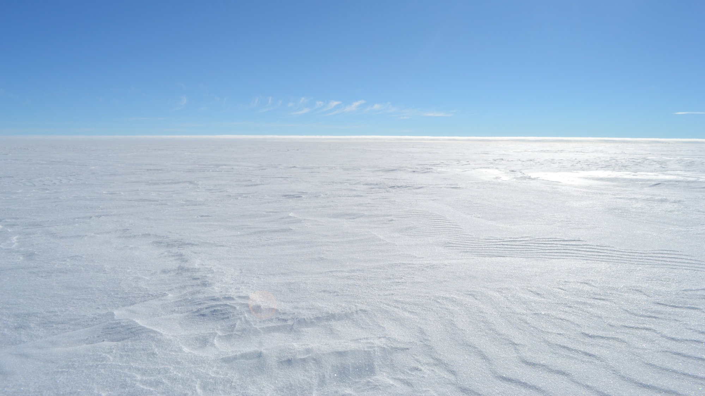

SnowDOGS project
Snow D-Excess Origin Study
Ice core water isotope records from the polar areas are invaluable climate proxies providing information about the relationship between the climate mean state and it's variability. The secondary ice core water isotope "excess" parameters, d-excess and 17O-excess, are especially useful for climate reconstruction since they presumably contain climatic information from the precipitation source regions. However, when simulating excess records with state-of-the-art isotope-enabled climate models, simulated and observed records disagree in seasonal to decadal signal variability.
Strikingly, the ability to simulate isotope variability in precipitation and isotope variability in ice cores is distinct, which suggests d-/17O-excess signal formation processes after deposition. Recently, it was demonstrated that post-depositional processes (PDP) can influence the snow isotopic composition, yet the impact of PDP on the ice core signal has not been quantified. Thus, PDP could be the missing link in our understanding of the transfer function between climate and ice core signal. SnowDOGS' hypothesis is thus that PDP, which are currently not implemented in climate models, define the ice core d-/17O-excess signals and overprint the original precipitation source region information.
SnowDOGS aims to quantify the impact of PDP on ice core excess signals by implementing multiple PDP in the existing Community Firn Model. Simulated d-/17O-excess records will be compared against observed ice core records from various locations on the Greenland and Antarctic Ice Sheet. SnowDOGS will clarify i) if PDP help in aligning simulated and observed isotope records, ii) to what extent PDP overprint the original source signal, and iii) what role PDP played in generating the high-frequency variability in d-/17O-excess records observed in different climate states. SnowDOGS will thus combine modeling and proxy records to improve the reconstruction and prediction of climate variability.
Funding
SnowDOGS is funded by the Norwegian Research Council under the Grant No: 335140
The project will run from December 2023 to November 2026.
Collaboration partners
- University of Bergen, Geophysical Institute, Bergen, Norway
-
Home institution
Prof. Hans Christian Steen-Larsen
- University of Washington, Earth and Space Sciences, Seattle, US
-
Prof. Eric Steig
- Laboratoire des Sciences du Climat et de l'Environnement, Gif sur Yvette, France
-
Prof. Amaëlle Landais